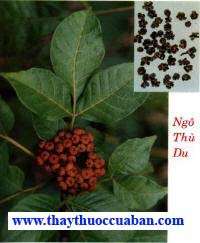

Tên khác
Tên thường gọi: Ngô thù du còn gọi là Ngô thù, Thù du
Tên khoa học: Evodia rutaecarpa (Juss) Benth- Cam (Rutaceae).
Tiếng Trung: 吳 茱 萸
Cây Ngô thù
( Mô tả, hình ảnh, thu hái, chế biến, thành phần hoá học, tác dụng dược lý ....)
Mô Tả:
Cây cao chừng 2,5-5m. Cành màu nâu hay tím nâu, khi còn non có mang lông mềm dài, khi gìa lông rụng đi, trên mặt cành có nhiều bì khổng. Lá mọc đối, kép lông chim lẻ. Cả cuống và lá dài độ 15-35cm, hai đến 5 đôi lá chét có cuống ngắn. Trên cuống lá và cuống lá chét có mang lông mềm. Lá chét dài 5-15cm, rộng 2,5-5cm, đầu lá chét nhọn, dài, mép nguyên, 2 mặt có lông màu nâu mịn, mặt dưới nhiều hơn, soi lên ánh sáng sẽ thấy những điểm tinh dầu. Hoa đơn tính khác gốc; đa số những hoa nhỏ tụ thành từng tán hay đặc biệt thành chùm. Cuống hoa trông to thô có nhiều lông, màu nâu mềm. Hoa màu vàng trắng, hoa cái lớn hơn hoa đực. Nhập của Trung Quốc.
Địa lý :
Mọc ở một số vùng cao phía Bắc Việt Nam như Cao Bằng, Lạng Sơn. Thường phải nhập.
Thu hái, Sơ chế :
Vào tháng 9-10, lúc quả còn đang xanh hoặc hơi vàng xanh, chưa tách ra thì hái lấy, phơi khô hoặc sấy khô. Bộ phận dùng : Quả chín phơi khô.
Bào chế :

Nấu nước sôi tẩy 7 lần để lại vị đắng nồng. Sấy khô dùng (Lôi Công Bào Chế Dược Tính Giải).
Chích Ngô thù du: Dùng Cam thảo sắc lấy nước, bỏ bã, cho Ngô thù vào, tẩm, sao qua cho khô (Mỗi 100 cân Ngô thù, dùng Cam thảo 6 cân 4 lạng) (Trung Dược Đại Từ Điển).
Theo kinh nghiệm Việt Nam: Lấy nước đun sôi để ấm (60 -70o) đổ vào ngô thù quấy nhẹ cho đến nguội. Bỏ nước nguội đi. Làm lại như trên 2- 3 lần (thuỷ bào). Sấy khô, giã dập (dùng sống) (Phương Pháp Bào Chế Đông Dược). Bảo quản: để nơi khô ráo, khó mốc mọt, nhưng đậy kín để giữ hương vị.

Thành phần hóa học :
Evoden, Ocimene, Evodin, Evodol, Gushuynic acid, Evodiamine, Rutaecarpine, Wuchuyine, Hydroxyevodiamine, Evocarpine, Isoevodiamine, Evodione, Evogin, Rutaevin (Trung Dược Học).
Trong Ngô thù có trên 0,4% tinh dầu. Trong tinh dầu có Evoden C11H16, Evodin hoặc Obakulacton C26H30O8, Oximen O10H10 và3 alcaloid: Evodiamin C19H17N3O, Rutaecacpin C18H18N3O và Wuchuyin C13H13N3O (J. Amer, Pharm. Ass 1933, 22 : 716).
Tác dụng dược lý:
Tác dụng kháng khuẩn: Năng suất sắc Ngô thù du có tác dụng ức chế mạnh in vitro đối với Vibrio cholerae, 1 số bệnh ngoài da và nhiều ký sinh trùng kể cả giun đũa và Hirudo (Trung Dược Học).
Tác dụng đối với hệ thần kinh trung ương: Ngô thù du Nhật Bản có tác dụng giảm đau. Thí nghiệm ở Trung Quốc chích dịch chiết Ngô thù du vào tĩnh mạch cho thấy có tác dụng giảm đaugiống chất antipyrin (Trung Dược Học).
Tác dụng trên cơ mềm: Chất utamine, trích ly từ Rutaecarpine có tác dụng kích thích mạnh trên tử cung (Trung Dược Học).
Lượng lớn Ngô thù du - tác dụng kích thích thần kinh trung ương và có thể dẫn đến rối lọan thị giác, gây nên ảo giác. Độc tính của Evoxine rất thấp, liều chích tĩnh mạch gây chết (LD50) ở chuột nhắt là 135g/kg (Trung Dược Học).
Cách dùng:

Chích Ngô thù du: Dùng Cam thảo sắc lấy nước, bỏ bã, cho Ngô thù vào, tẩm, sao qua cho khô (Mỗi 100 cân Ngô thù, dùng Cam thảo 6 cân 4 lạng) (Trung Dược Đại Từ Điển).
Vị thuốc Ngô thù
( Công dụng, Tính vị, quy kinh, liều dùng .... )
Tính vị:
Vị cay, tính ôn (Bản Kinh).
Rất nhiệt, có ít độc (Danh Y Biệt Lục).
Vị đắng, cay, rất nhiệ, có độc (Dược Tính Luận).

Vị cay, đắng, tính ôn, có độc (Trung Dược Đại Từ Điển).Vị cay, đắng, tính nhiệt, có độc (Trung Dược Học).
Quy kinh:
Vào kinh túc Thái âm Tỳ, túc Thiếu âm Thận, túc Quyết âm Can (Thang Dịch Bản Thảo).
Vào kinh Can, Tỳ, Vị, Đại trường, Thận (Lôi Công Bào Chế Dược Tính Giải).
Vào kinh can, Vị (Trung Dược Đại Từ Điển).
Vào kinh Vị, Tỳ, Can, Thận (Trung Dược Học).
Công dụng:

Ôn trung, chỉ thống, hạ khí, trục phong tà, khai tấu lý (Bản Kinh).
Kiện tỳ, thông quan tiết (Nhật Hoa Tử Bản Thảo).
Khai uất, hóa trệ (Bản Thảo Cương Mục).
Ôn trung, chỉ thống, lý khí, táo thấp (Trung Dược Đại Từ Điển).
Khứ hàn, chỉ thống, chỉ ẩu, giáng nghịch, ôn tỳ, chỉ tả, khứ đờm thấp (Trung Dược Học).
Chủ trị:
Trị nôn nghịch, nuốt chua, đầu đau do quyết âm bệnh, tạng hàn, nôn mửa, ti6eu chảy, bụng trướng đau, cước khí, sán khí, miệng lở loét, răng đau, thấp chẩn, thủy đậu (Trung Dược Đại Từ Điển).
Ứng dụng lâm sàng của vị thuốc Ngô thù
Điều trị huyết áp cao:
Bột Ngô thù du trộn với Dấm dán vào lòng bàn chân để trị huyết áp cao có hiệu qủa tốt. Huyết áp thường hạ trong vòng 12-24 giờ (Trung Dược Học).
Điều trị rối loạn vị trường (dạ dày với ruột):
Dùng bột Ngô thù du trộn với Dấm đắp vào rốn, trị 20 ca bị chứng đầy trướng. Phương phápnày cũng dùng trị chứng bụng nóng (Trung Dược Học).
Điều trị bệnh ngoài da:
Dùng nước sắc Ngô thù du trị 84 ca bị eczema hoặcviêm da thần kinh có hiệu quả (Trung Dược Học).
Điều trị tai - mũi - họng:
Dùng bột Ngô thù du bôi vào huyệt Dũng Tuyền (lòng bàn chân)có hiệu quả tốt để trị trẻ nhỏ miệng lở (đẹn). Hầu hết đều có kết qủa trong 1 ngày (Trung Dược Học).
Tác dụng điều hòa nhiệt độ:
Dịch chiết chất Isoevodiamine làm hơi tăng nhiệt độ ở thỏ khi cho ăn rau sống (Trung Dược Học).
Tham khảo
Kiêng kỵ
Âm hư, có triệu chứng nhiệt: không dùng (Trung Dược Học).
Nơi mua bán vị thuốc NGÔ THÙ đạt chất lượng ở đâu?
Trước thực trạng thuốc đông dược kém chất lượng, nguồn gốc không rõ ràng,... xuất hiện tràn lan trên thị trường, làm ảnh hưởng tới hiệu quả điều trị cũng như ảnh hưởng tới sức khỏe của bệnh nhân. Việc lựa chọn những địa chỉ uy tín để mua thuốc đông dược là rất quan trọng và cần thiết. Vậy khách hàng có thể mua vị thuốc NGÔ THÙ ở đâu?
NGÔ THÙ là vị thuốc nam quý, được sử dụng rộng rãi trong YHCT. Hiện tại hầu hết các cửa hàng thuốc đông dược, phòng khám đông y, phòng chẩn trị YHCT... đều có bán vị thuốc này. Tuy nhiên người mua nên chọn những địa chỉ có uy tín, đảm bảo chất lượng, có giấy phép hoạt động để mua được vị thuốc đạt chất lượng.
Với mong muốn bệnh nhân được sử dụng những loại dược liệu đúng, chất lượng tốt, phòng khám Đông y Nguyễn Hữu Toàn không chỉ là đia chỉ khám chữa bệnh tin cậy, uy tín chất lượng mà còn cung cấp cho khách hàng những vị thuốc đông y (thuốc nam, thuốc bắc) đúng, chuẩn, đạt chuẩn chất lượng. Các vị thuốc có trong tiêu chuẩn Dược điển Việt Nam đều được nghành y tế kiểm nghiệm đạt chất lượng tiêu chuẩn.
Vị thuốc NGÔ THÙ được bán tại Phòng khám là thuốc đã được bào chế theo Tiêu chuẩn NHT.
Giá bán vị thuốc NGÔ THÙ tại Phòng khám Đông y Nguyễn Hữu Toàn: 600.000vnd/1kg
Tùy theo thời điểm giá bán có thể thay đổi.
+ Khách hàng có thể mua trực tiếp tại địa chỉ phòng khám: Cơ sở 1: Số 481 lô 22 Lê Hồng Phong, Phường Gia Viên, Thành phố Hải Phòng
+ Mua trực tuyến: Thuốc được chuyển qua đường bưu điện. Khi nhận được thuốc khách hàng thanh toán tiền COD.
Tag: cay ngo thu, vi thuoc ngo thu, cong dung ngo thu, Hinh anh cay ngo thu, Tac dung ngo thu, Thuoc nam
Thaythuoccuaban.com Tổng hợp
*************************